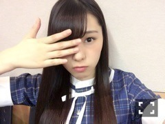
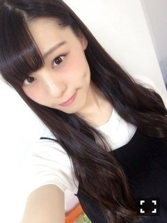
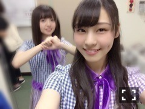
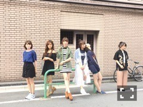

| 2016/09 03 Sat | 予定詰め込み中～_(．．*)vol.118 |
みなさんこんばんはー！
相楽伊織です！

手が可愛くない、、
誰だっけ、
みり愛かな？
〇〇中って言葉
可愛いよねって言ってたの、
「そーかなー」って言ったけど
さっそく可愛いならと思って
使ってみてる(。-∀-)♪♪

バースデーライブのことを
もう少し詳しく書きますね！
まず、桜井さんが
帰ってきてくれたこと
本当に良かったです！！！
桜井さんがいないライブは
少し違いました。
神宮の最終日に
桜井さんが円陣の掛け声をした時
「これだ！！」ってなって
すごくホッとしたというか、、
だから本当に帰ってきてくれて
嬉しかったです！
そして、
全国ツアーからメンバーの先頭に立って
引っ張ってくれた飛鳥ちゃん！
本当にお疲れ様でした！
ずっと後ろから見てたけど
飛鳥ちゃんがとっても大きかったです！
ここまで本当にありがとうヾ(＠⌒ー⌒＠)ノ

昨日は
乃木坂46 セブン-イレブン限定ミニライブイベント
が幕張でありました！
まだ名古屋、京都もあるので
来てくれる皆さんは楽しみましょう～♪♪
そしてその前日には
安室奈美恵さんのライブに行ってきました♡
まひろさんと♡！
グッズ沢山買いすぎた！！
ライブ楽しすぎたヽ(*^^*)ノ
声枯れそうになった、、
やっぱり大好き！
また行けたら行きたいなぁヽ(*^^*)ノ
聴きたい曲たくさん聴けた♡
本当にかっこよくて可愛かった♡
そして、今日は
TGCを観に行ってきました！！
メンバーのランウェイも見て、
好きなモデルさんも沢山見られて
とても楽しかったーヾ(＠⌒ー⌒＠)ノ
キラキラ輝いてて
かっこよかった可愛かった素敵だった☆
明日は久しぶりの握手会！
まいちゅんと同じレーンで
待ってます(^^)
気を付けて来てください！
 楽天SHOWTIME 乃木坂ゴルフ倶楽部
のぎ天2
乃木坂46 2nd写真集
楽天SHOWTIME 乃木坂ゴルフ倶楽部
のぎ天2
乃木坂46 2nd写真集
｢1時間遅れのI love you.｣
SamuraiELO 発売中

i o r i .

コメント(210)
2016/09/03 22:12